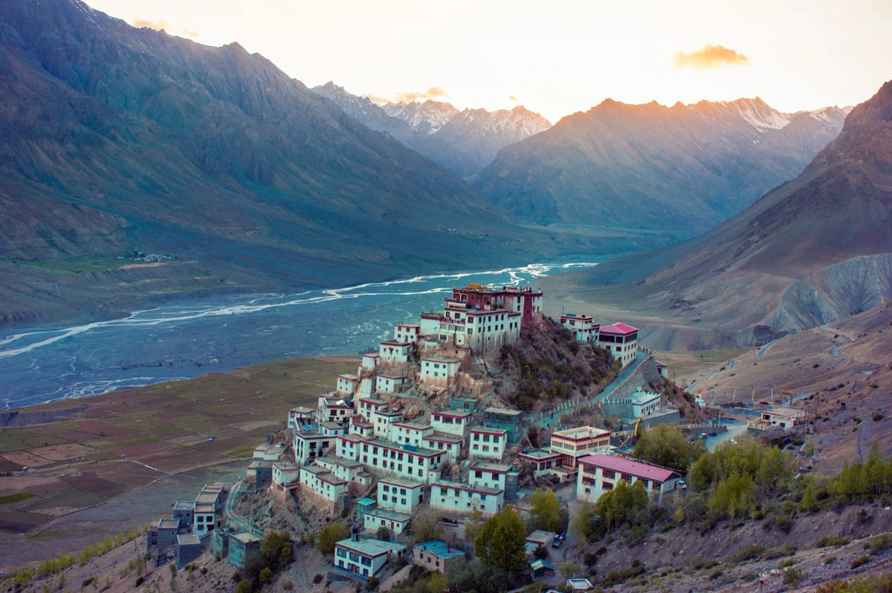
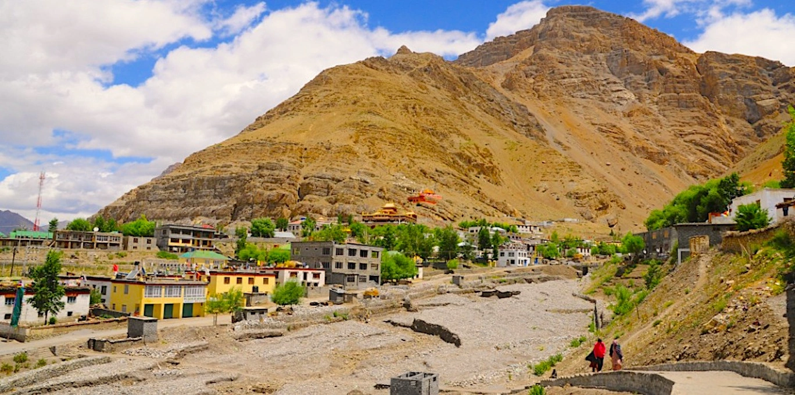
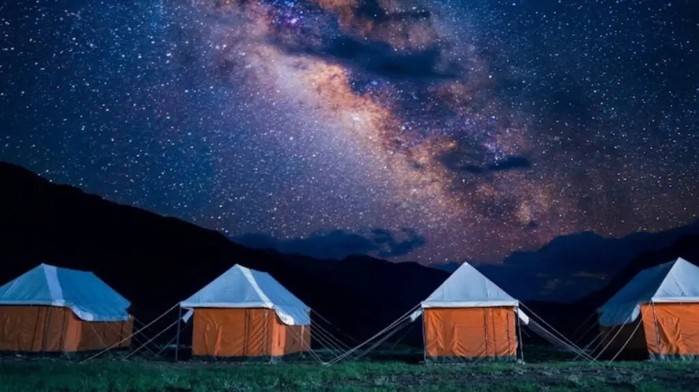

Complete Spiti Valley Tourism Guide 2026 – Best Places, Budget & Road Trip Tips
Spiti Valley is one of the most breathtaking Himalayan destinations in India. Located in the cold desert mountains of Himachal Pradesh, Spiti offers dramatic landscapes, ancient monasteries, remote villages, high-altitude roads and unforgettable adventure experiences.
Often called the “Middle Land” between India and Tibet, Spiti Valley feels completely different from typical hill stations like Shimla or Manali. Instead of green forests and crowded tourist markets, Spiti welcomes travelers with barren mountains, crystal-clear rivers, peaceful monasteries and raw Himalayan beauty.
- High-altitude Himalayan landscapes
- Ancient Buddhist monasteries
- Adventure bike trips
- Camping beside Chandratal Lake
- Peaceful remote villages
- Photography & stargazing
Best Time to Visit Spiti Valley
Summer Season (May to July)
This is the most popular season for Spiti Valley tourism because roads remain open and weather stays pleasant.
- Best for bike trips
- Comfortable weather
- Camping & sightseeing
- Perfect for road trips
Winter Season (October to March)
Winter transforms Spiti into a frozen Himalayan desert with snow-covered villages and extreme landscapes.
- Snowfall experiences
- Frozen landscapes
- Peaceful tourism
- Extreme cold weather
Best Places to Visit in Spiti Valley


Kaza
Kaza is the main town and tourism hub of Spiti Valley. It serves as the base for village tours, cafés and nearby sightseeing.
Key Monastery
Key Monastery is the most famous monastery in Spiti Valley and offers breathtaking Himalayan views.
Chandratal Lake
Chandratal Lake is one of the most beautiful high-altitude lakes in India, famous for camping and night sky photography.
Langza, Hikkim & Komic
These remote villages are known for Buddhist culture, fossil hunting, high-altitude landscapes and peaceful Himalayan life.
Spiti Valley Road Trip Guide
A Spiti Valley road trip is considered one of the greatest Himalayan adventures in India.
Via Shimla Route
- Shimla → Kalpa → Nako → Tabo → Kaza
- Safer altitude gain
- Better for first-time travelers
Via Manali Route
- Manali → Kunzum Pass → Kaza
- More adventurous roads
- Popular among bikers
Always keep buffer days for landslides, weather changes and road closures while planning Spiti Valley trips.
Spiti Valley Budget Guide
- Budget backpacking trip: ₹12,000 – ₹20,000
- Mid-range trip: ₹25,000 – ₹40,000
- Premium road trip: ₹50,000+
Food in Spiti Valley
Food in Spiti is simple, warm and comforting. Travelers can enjoy Tibetan meals, mountain café culture and authentic Himalayan cuisine.
- Thukpa
- Momos
- Butter Tea
- Tibetan Bread
- Dal Rice Meals
Essential Travel Tips
- Carry warm clothing even during summer
- Download offline maps
- Keep extra cash
- Avoid night driving
- Drink plenty of water
- Respect monastery rules and local culture
Suggested 9-Day Spiti Valley Itinerary Best Suited for All Ages
- Day 1 – Chandigarh to Narkanda
- Day 2 – Narkanda to Sangla
- Day 3 – Sangla to Kalpa
- Day 4 – Kalpa to Tabo
- Day 5 – Tabo to Kaza
- Day 6 – Kaza sightseeing
- Day 7 – Kaza to Chandratal
- Day 8 – Chandratal to Manali
- Day 9 – Departure
Wander & Wonder Travels – Spiti Valley Group Tours
Wander & Wonder Travels offers professionally curated Spiti Valley group tours covering Himalayan road trips, camping experiences, local culture and photography-friendly itineraries.
- Comfortable stays
- Budget-friendly departures
- Experienced trip coordination
- Scenic Himalayan road trips
- Safe & reliable travel planning